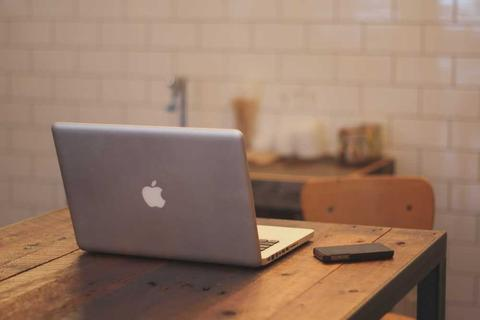
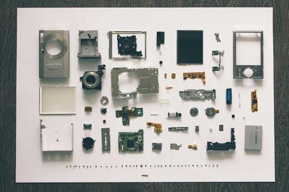

Цей сайт
Особистий сайт на три сторінки: адаптивна верстка mobile-first, Grid, Flexbox, container queries і трохи JavaScript.

Розробник · фотограф-аматор
Привіт, я Артем — студент КПІ. Тут мої проєкти, фотографії та нотатки про те, як я вчуся робити веб.
Я навчаюся на третьому курсі КПІ ім. Ігоря Сікорського. Вдень розбираюся, як працюють сайти й автоматизовані системи, а у вихідні беру камеру й іду шукати гарне світло — у місті, в горах чи просто на кухні.
Цей сайт — моя робоча майстерня: тут я збираю проєкти, викладаю улюблені кадри і пишу короткі нотатки про те, чого навчився. Кожен рядок коду тут написаний так, щоб я міг його пояснити.
Навчальні й власні проєкти. Карток стільки в рядку, скільки влізе, — Grid рахує сам.
Особистий сайт на три сторінки: адаптивна верстка mobile-first, Grid, Flexbox, container queries і трохи JavaScript.

= 56.25rem) 18rem, 100vw" width="480" height="320" loading="lazy" alt="Ноутбук на столі в світлій кімнаті">Дашборд споживання електроенергії: дані з лічильників, графіки по днях.

= 56.25rem) 18rem, 100vw" width="480" height="320" loading="lazy" alt="Акуратно розкладені на білому столі гаджети й аксесуари">Скрипт, що розкладає фото по теках за датою й камерою з EXIF.
Telegram-бот, який надсилає розклад пар групи на завтра.
| Навичка | Рівень | Де застосовую |
|---|---|---|
| HTML і CSS | 4 з 5 | Цей сайт, лабораторні |
| JavaScript | 3 з 5 | Інтерактив, бот розкладу |
| Python | 4 з 5 | Скрипти, обробка даних |
| Git і GitHub | 3 з 5 | Усі проєкти |
| Lightroom | 4 з 5 | Обробка фото |
| Плівкова зйомка | 3 з 5 | Прогулянки містом |
Відкритий до навчальних проєктів, колаборацій і фотопрогулянок. Пишіть!